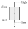
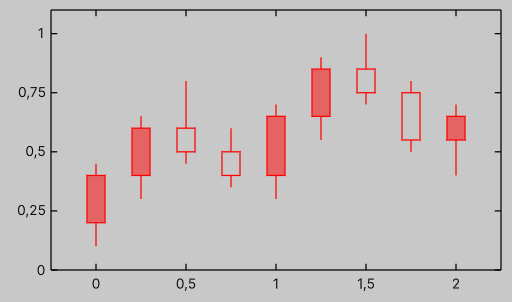
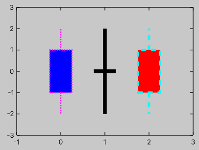

Plot with candles
Data
To plot candles, you can use PlotWithCandles.
Unlike other plot types, this plot requires an IReadOnlyList<Candle> as its data series.
To create a Candle, use its constructor
var c = new Candle(x, open, low, high, close);
Below is a schematic representation of candle values:

Depending on the relationship between a candle's open and close values, its direction is determined by the CandleDirection enum.
- If
openis less thanclose, the direction isUp. - If
openis greater thanclose, the direction isDown. - Otherwise, the direction is
Unchanged.
By default, the candle body may or may not be filled with color, depending on its direction. See the styling section to learn how to customize this behavior.
Below is an example plot for candle data:
var graph = new Graph
{
XAxis = { Min = -0.25f, Max = +2.25f },
YAxis = { Min = 0, Max = 1.1f },
style = { height = 250 },
Theme =
{
Key = { Position = KeyPosition.InTopRight },
Grid = { Display = DisplayStyle.None },
}
};
var data = new Candle[]
{
new(x: 0.00f, open: 0.20f, low: 0.10f, high: 0.45f, close: 0.40f),
new(x: 0.25f, open: 0.40f, low: 0.30f, high: 0.65f, close: 0.60f),
new(x: 0.50f, open: 0.60f, low: 0.45f, high: 0.80f, close: 0.50f),
new(x: 0.75f, open: 0.50f, low: 0.35f, high: 0.60f, close: 0.40f),
new(x: 1.00f, open: 0.40f, low: 0.30f, high: 0.70f, close: 0.65f),
new(x: 1.25f, open: 0.65f, low: 0.55f, high: 0.90f, close: 0.85f),
new(x: 1.50f, open: 0.85f, low: 0.70f, high: 1.00f, close: 0.75f),
new(x: 1.75f, open: 0.75f, low: 0.50f, high: 0.80f, close: 0.55f),
new(x: 2.00f, open: 0.55f, low: 0.40f, high: 0.70f, close: 0.65f),
};
graph.PlotWithCandles(data, width: .1f);

Styling

.my-plot {
--graph-fill-color-up: blue;
--graph-fill-color-down: red;
--graph-fill-color-unchanged: black;
--graph-line-color-up: magenta;
--graph-line-color-down: cyan;
--graph-line-color-unchanged: black;
--graph-line-width-up: 2;
--graph-line-width-down: 4;
--graph-line-width-unchanged: 6;
--graph-line-dash-pattern-up: "2 2";
--graph-line-dash-pattern-down: "8 8";
--graph-line-dash-pattern-unchanged: "1";
}